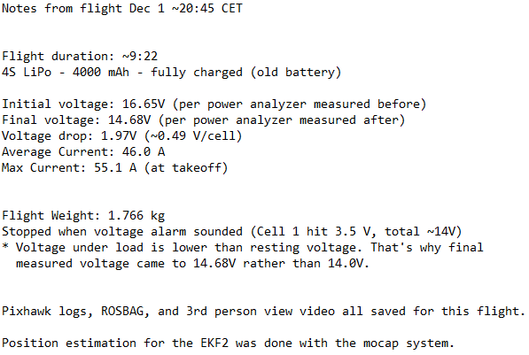

Flight Reporting
After the flight, there will be a few different sources of useful flight data that should be compiled and stored for analysis and future reference.
This includes:
- Flight ROSBAG
- PX4 log
- External video
- Flight notes
Examples of the what & how to save this flight data can be found in the Flight tests section of the Weekly Updates & Tests page.
Flight ROSBAG
The complete list of topics that are recorded:
rpl@ribbitV2:~$ rostopic list
/mavlink/from
/mavlink/gcs_ip
/mavlink/to
/mavros/actuator_control
/mavros/adsb/send
/mavros/adsb/vehicle
/mavros/altitude
/mavros/battery
/mavros/cam_imu_sync/cam_imu_stamp
/mavros/companion_process/status
/mavros/debug_value/debug
/mavros/debug_value/debug_vector
/mavros/debug_value/named_value_float
/mavros/debug_value/named_value_int
/mavros/debug_value/send
/mavros/distance_sensor/teraranger
/mavros/esc_info
/mavros/esc_status
/mavros/estimator_status
/mavros/extended_state
/mavros/fake_gps/mocap/tf
/mavros/global_position/compass_hdg
/mavros/global_position/global
/mavros/global_position/gp_lp_offset
/mavros/global_position/gp_origin
/mavros/global_position/home
/mavros/global_position/local
/mavros/global_position/raw/fix
/mavros/global_position/raw/gps_vel
/mavros/global_position/raw/satellites
/mavros/global_position/rel_alt
/mavros/global_position/set_gp_origin
/mavros/gps_rtk/rtk_baseline
/mavros/gps_rtk/send_rtcm
/mavros/gpsstatus/gps1/raw
/mavros/gpsstatus/gps1/rtk
/mavros/gpsstatus/gps2/raw
/mavros/gpsstatus/gps2/rtk
/mavros/hil/actuator_controls
/mavros/hil/controls
/mavros/hil/gps
/mavros/hil/imu_ned
/mavros/hil/optical_flow
/mavros/hil/rc_inputs
/mavros/hil/state
/mavros/home_position/home
/mavros/home_position/set
/mavros/imu/data
/mavros/imu/data_raw
/mavros/imu/diff_pressure
/mavros/imu/mag
/mavros/imu/static_pressure
/mavros/imu/temperature_baro
/mavros/imu/temperature_imu
/mavros/landing_target/lt_marker
/mavros/landing_target/pose
/mavros/landing_target/pose_in
/mavros/local_position/accel
/mavros/local_position/odom
/mavros/local_position/pose
/mavros/local_position/pose_cov
/mavros/local_position/velocity_body
/mavros/local_position/velocity_body_cov
/mavros/local_position/velocity_local
/mavros/log_transfer/raw/log_data
/mavros/log_transfer/raw/log_entry
/mavros/manual_control/control
/mavros/manual_control/send
/mavros/mission/reached
/mavros/mission/waypoints
/mavros/mocap/pose
/mavros/mocap/pose2d
/mavros/mount_control/command
/mavros/mount_control/orientation
/mavros/obstacle/send
/mavros/odometry/in
/mavros/odometry/out
/mavros/onboard_computer/status
/mavros/param/param_value
/mavros/play_tune
/mavros/px4flow/ground_distance
/mavros/px4flow/raw/optical_flow_rad
/mavros/px4flow/raw/send
/mavros/px4flow/temperature
/mavros/radio_status
/mavros/rangefinder/rangefinder
/mavros/rc/in
/mavros/rc/out
/mavros/rc/override
/mavros/setpoint_accel/accel
/mavros/setpoint_attitude/cmd_vel
/mavros/setpoint_attitude/thrust
/mavros/setpoint_position/global
/mavros/setpoint_position/global_to_local
/mavros/setpoint_position/local
/mavros/setpoint_raw/attitude
/mavros/setpoint_raw/global
/mavros/setpoint_raw/local
/mavros/setpoint_raw/target_attitude
/mavros/setpoint_raw/target_global
/mavros/setpoint_raw/target_local
/mavros/setpoint_trajectory/desired
/mavros/setpoint_trajectory/local
/mavros/setpoint_velocity/cmd_vel
/mavros/setpoint_velocity/cmd_vel_unstamped
/mavros/state
/mavros/statustext/recv
/mavros/statustext/send
/mavros/target_actuator_control
/mavros/time_reference
/mavros/timesync_status
/mavros/trajectory/desired
/mavros/trajectory/generated
/mavros/trajectory/path
/mavros/vfr_hud
/mavros/vibration/raw/vibration
/mavros/vision_pose/pose
/mavros/vision_pose/pose_cov
/mavros/vision_speed/speed_vector
/mavros/wind_estimation
/rosout
/rosout_agg
/tf
/tf_static
For each flight, you should record a ROSBAG. If you are unfamiliar with this process, see the ROSBAG Tutorials. Be sure to record all mavros/ and tf/ topics, and omit unnecessary topics, so you can more easily replay and analyze these ROSBAGs at a later date. Additionally, if any RealSense cameras are collecting data, the data should be also be saved in the ROSBAGs.
Since 10+ minutes the 3D camera data from three RealSense cameras will be an impractically large file,
it recommended that you record a base ROSBAG with all topics mentioned above for the duration of the flight
and additional ROSBAGs of < 1 min with these topics AND the realsense/ camera topics during the periods of interest.
PX4 Logs
The PX4 logs can be downloaded after the flight from QGroundControl and analyzed, as described in Flight Reporting.
Note: It is recommended to keep SDLOG_MODE at it's default value of 0 so you don't record unnecessary log data.
Flight Review
The Flight Review tool they recommend proved very useful for us.
Follow the guidance in Log Analysis using Flight Review for details on how to interpret the Flight Review results.
ECL EKF Analysis
Another useful tool is the ECL EKF Analysis tool from Auterion.
This tool should already be installed in the tools/ directory of your PX4-Autopilot installation. If it isn't, you should be able to follow the installation instructions in their repo.
Process your PX4 logs using the process_logdata_ekf.py script from the command line, e.g:
~$ ./PX4-Autopilot/Tools/ecl_ekf/process_logdata_ekf.py <path/to/PX4_log/filename>.ulg
This will generate a .pdf report of states, values, etc. specific to the ECL EKF estimator data recorded over the duration the flight.
External Video
You should also record an external video of each flight. It is better if you have a dedicated camera for this, but a cell phone can be used if not.
Recommendations:
- Try to get most/all of the flight volume in (unobstructed) view of the camera
- Mount/position the camera somewhere stable so it does not move
- Handheld video will be less pleasant to watch
- If filming through the net, stick the camera lens just inside the net so the net is not obstructing the camera's view
- Ensure you have enough battery/memory capacity to record the full flight
Check out some examples of flight videos we recorded in the Flight tests section of the Weekly Updates & Tests page.
Flight Notes
It is recommended to jot down some notes about the flight immediately after the flight and especially during analysis of the flight data if you are debugging some issues. e.g:

These sample notes were taken while we were performing battery life/flight duration tests, hence the focus on power consumption.
The flight notes were also particularly useful for us when tuning the drone's PID controllers (see Multicopter PID Tuning Guide) so that we could quickly & easily correspond PID parameter changes made with the resulting performance changes in the drone's flight.
Check out some more examples of flight notes we took in the Flight tests section of the Weekly Updates & Tests page.